克 莱 恩 莫 雷 蒂
夏 洛 克 莫 里 亚 蒂
格 尔 曼 斯 帕 罗
主 要 人 物 |
愚 者 篇 |
|
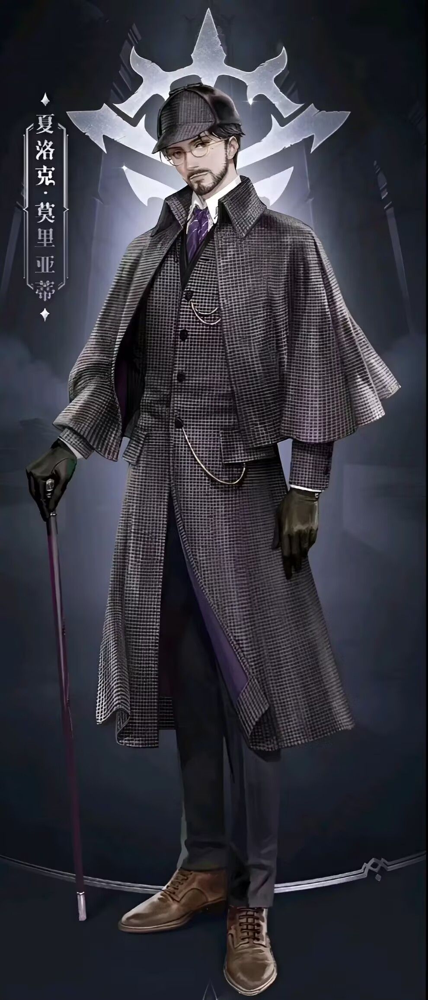 | 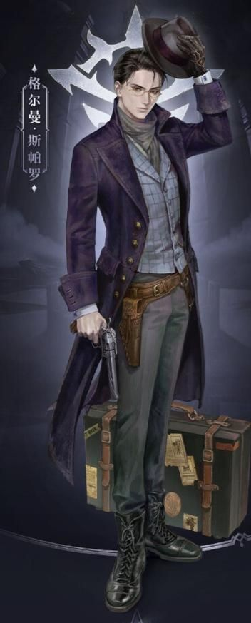 | ||
克 莱 恩 莫 雷 蒂 |
夏 洛 克 莫 里 亚 蒂 |
格 尔 曼 斯 帕 罗 |
||
| 夏洛克·莫里亚蒂是克莱恩·莫雷蒂在廷根市“自杀”后，于贝克兰德活跃时期精心塑造的公开身份。他是一位戴着金边眼镜、举止优雅、富有正义感和同情心的知名侦探。这个身份不仅是他赚取金钱、融入中产阶级的掩护，更是他深入调查非凡事件、搜集魔药配方与材料的重要工具。作为“无面人”，他能完美维持这一形象，并通过解决一系列非凡案件（如“红烟囱”事件、调查兰尔乌斯踪迹等）在侦探界建立起卓越声誉。在此期间，他结识了记者迈克·约瑟夫、贵族小姐特莉丝等关键人物，并巧妙地利用这个身份周旋于值夜者、机械之心等官方组织之间。最终，为了破坏因斯·赞格威尔的阴谋并摆脱阿蒙的威胁，克莱恩在圣塞缪尔教堂前精心策划了夏洛克·莫里亚蒂的“壮烈牺牲”，自此，这位充满魅力的侦探成为贝克兰德的一段传奇，也为克莱恩换用新身份“道恩·唐泰斯”铺平了道路。 | 夏洛克·莫里亚蒂是克莱恩·莫雷蒂在廷根市“自杀”后，于贝克兰德活跃时期精心塑造的公开身份。他是一位戴着金边眼镜、举止优雅、富有正义感和同情心的知名侦探。这个身份不仅是他赚取金钱、融入中产阶级的掩护，更是他深入调查非凡事件、搜集魔药配方与材料的重要工具。作为“无面人”，他能完美维持这一形象，并通过解决一系列非凡案件（如“红烟囱”事件、调查兰尔乌斯踪迹等）在侦探界建立起卓越声誉。在此期间，他结识了记者迈克·约瑟夫、贵族小姐特莉丝等关键人物，并巧妙地利用这个身份周旋于值夜者、机械之心等官方组织之间。最终，为了破坏因斯·赞格威尔的阴谋并摆脱阿蒙的威胁，克莱恩在圣塞缪尔教堂前精心策划了夏洛克·莫里亚蒂的“壮烈牺牲”，自此，这位充满魅力的侦探成为贝克兰德的一段传奇，也为克莱恩换用新身份“道恩·唐泰斯”铺平了道路。 | 格尔曼·斯帕罗是克莱恩·莫雷蒂为扮演“无面人”与“秘偶大师”，在苏尼亚海上精心塑造的第二个重要身份。他以其冷酷疯狂、狩猎海盗的传奇形象闻名于五海，被世人敬畏地称作“最强猎人”、“疯狂冒险家”。这个身份是克莱恩消化魔药、积累财富、搜集美人鱼以及应对各方势力的关键工具。作为格尔曼，他外表冷峻，头戴半高丝绸礼帽，动作精准如钟表，常常一言不发便拔枪射击，以绝对的实力和疯狂的气质震慑了整个海上世界。他先后结识了“冰山中将”艾德雯娜、“星之上将”嘉德丽雅等海盗将军，并与吸血鬼埃姆林·怀特建立起深厚的友谊。在成功狩猎“疾病少女”特蕾茜、破解“黑色郁金香号”诅咒等一系列震撼大海的事件后，格尔曼·斯帕罗之名达到顶峰。最终，为更好地潜伏于贝克兰德，克莱恩让这位令人闻风丧胆的疯狂冒险家逐渐淡出了世界的视线，使其成为了一段流传于酒馆与海浪之间的不朽传说。 |
| 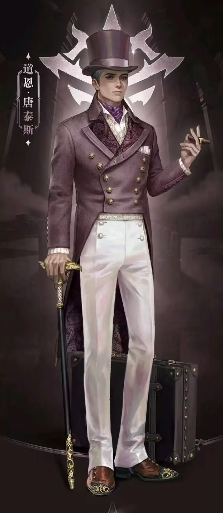 |  |
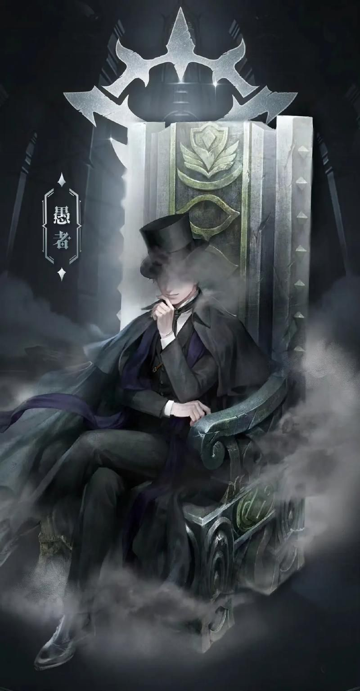 | ||
道 恩 唐 泰 斯 |
梅 林 赫 尔 墨 斯 |
愚 者 |
||
| 道恩·唐泰斯是克莱恩晋升序列4“诡法师”后，为潜入贝克兰德贵族社会而精心打造的第三重重要身份。他以外表成熟稳重、气质儒雅且乐善好施的殖民富翁形象出现，通过资助医院、教堂和学校迅速融入上层社交圈。这个身份的核心任务是接触塔罗会成员“正义”奥黛丽小姐背后的霍尔家族，从贵族层面调查鲁恩王室的成神阴谋，并为后续晋升搜集关键材料。作为道恩·唐泰斯，他蓄着两撇漂亮的小胡子，手持镶嵌宝石的手杖，以海外致富的经历和慷慨的慈善家形象作为完美伪装，在舞会、沙龙和慈善拍卖中游刃有余。期间他不仅与霍尔伯爵建立良好关系，更巧妙挫败了王室成员对奥黛丽的联姻企图。在身份因阿蒙的介入而暴露危机后，克莱恩以一场精心策划的“道恩·唐泰斯重病身亡”戏剧性落幕，让这位备受尊敬的富豪在众人惋惜中退场，为后续以“愚者”身份直面神战铺平道路。 | 梅林·赫尔墨斯是克莱恩·莫雷蒂晋升占卜家途径序列2“奇迹师”后启用的马甲，以流浪魔术师的身份游走于各地。这一名字暗藏巧思，“梅林”致敬亚瑟王传说中的神秘巫师，“赫尔墨斯”关联古希腊神话的旅者与信使之神，精准契合其漂泊不定、暗藏秘密的行事风格。他对外以“满足愿望”为招牌，凭借奇迹师的非凡能力，结合“全自动许愿机”等道具展现出诸多不可思议的神迹，既隐藏了真实身份，又借此收集信息、布局谋划，是克莱恩在中高序列阶段执行隐秘任务、影响局势的重要身份之一。 | 克莱恩成为“愚者”后，于“源堡”与阿蒙展开神战，他以决绝之姿揭露阿蒙弱点，以疯狂赌局压制阿蒙，成功摧毁其本体。融合“错误”和“门”的非凡特性时，他凭借“锚”坚守自我，随后进入“黑夜女神”神国取得封印，归还神灯，获威尔祝福。他召集“塔罗会”，托付众人传播信仰以唤醒自己，释放源堡古人类后陷入沉眠。十年后，回应梅丽莎祈祷初步苏醒，至此，他彻底掌控“源堡”，成为守护与希望象征的第二任诡秘之主 ，以非凡伟力庇佑信徒，影响着这个充满未知与神秘的世界。 |
塔 罗 会 篇 |
 |
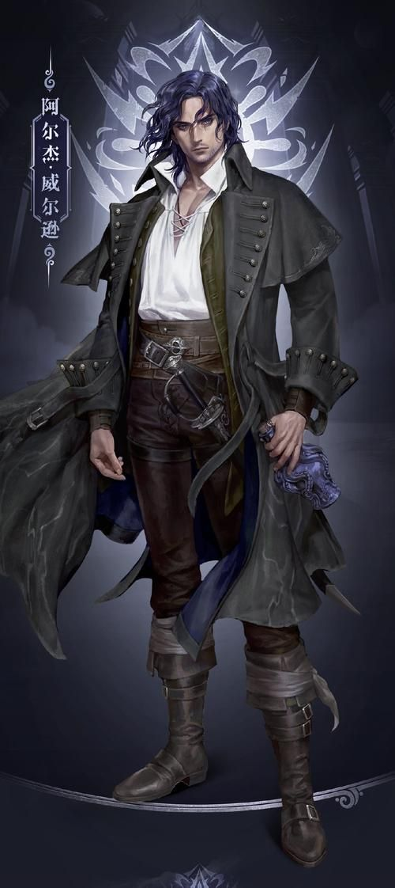 | 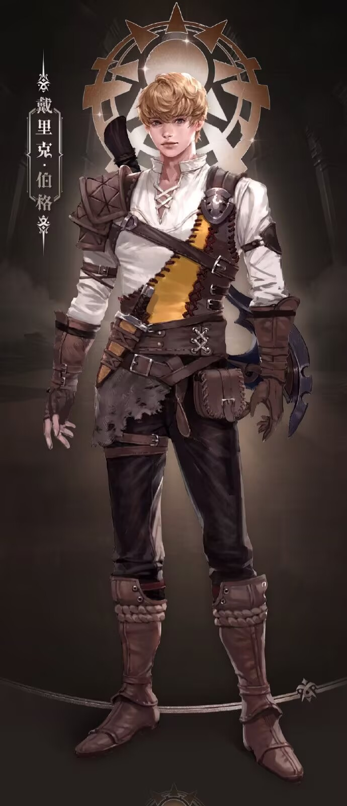 | ||
奥 黛 丽 霍 尔 代号 正义 |
阿 尔 杰 威 尔 逊 代号 倒吊人 |
戴 里 克 伯 格 代号 太阳 |
||
| 奥黛丽·霍尔是《诡秘之主》中塔罗会的核心成员，作为鲁恩王国贝克兰德霍尔伯爵之女，她出身高贵，被誉为“贝克兰德最耀眼的宝石”，同时是塔罗会创始成员（代号“正义”）与心理炼金会评议团委员（代号“傲慢”）。她金发碧眼、容貌绝美，气质高雅，常以精致长裙搭配首饰亮相，尽显贵族风范；性格天真真诚却不愚昧，善良且有底线，认清世界黑暗后逐渐成熟坚定，始终渴望帮助贫苦民众。她属于“观众”途径，晋升至序列3“织梦人”，拥有心理分析、情绪操控等能力，能通过微表情与肢体动作解析他人心理，还可引导或放大目标情绪；在塔罗会中，她既是“钱袋子”，为团队提供关键资金支持、资助其他成员，又凭借贵族身份搜集大量上层社会与王国动向信息，成为团队重要的信息来源与后勤保障。 | 阿尔杰·威尔逊是《诡秘之主》中塔罗会的重要成员，身为鲁恩王国海军“幽蓝复仇者号”船长，同时也是风暴教会的秘密成员，代号“倒吊人”，还曾是海神卡维图瓦的信徒。他外貌冷峻，肤色偏深，眼神锐利如鹰，常身着带有风暴元素的服饰，自带沉稳威严的气场；性格谨慎多疑，心思缜密，极具城府，早期略显功利，后在塔罗会的影响下逐渐褪去偏执，变得更有担当与格局。他属于“水手”途径，晋升至高位序列，拥有掌控风暴、驾驭海洋生物、适应水下环境等非凡能力，擅长海战与海洋相关的探索任务；在塔罗会中，他凭借丰富的海洋经验与对非凡世界的深入了解，为团队提供大量关于海洋、风暴教会及地下势力的关键信息，同时也借助塔罗会的资源弥补自身短板，是团队中重要的信息输出者与实战型成员。 | 戴里克·伯格是《诡秘之主》里塔罗会的关键成员，身为神弃之地白银城的居民，因城中可怕的血脉诅咒，他被迫亲手结束了父母生命，在绝望中向神秘存在“愚者”祈祷后被拉入灰雾之上，加入塔罗会，代号“太阳” 。他一头棕黄色头发，身材高大，受巨人血脉影响，从少年时近乎1米8一路长到2米以上，自带淳朴气质；性格单纯耿直，真诚善良，尽管背负着拯救白银城的沉重责任，仍对世界怀着善意，因缺乏处世经验常被塔罗会成员套取情报，好在大家也真心实意帮他成长。他属于“太阳”途径，能力不断进阶。他凭借对神弃之地的了解，提供黑面草、古代恶灵等特产与情报，是首个发现“愚者”与真实造物主差异的成员，也借助塔罗会资源一步步从序列9“歌颂者”晋升，最终成为序列4“无暗者”，带领白银城居民进入巨人王庭，打开通往外界大门，开启新生活，“愚者”沉眠后，负责罗斯德群岛“愚者”教会事务并传教，成为了真正拯救白银城的希望之光 。 |
| 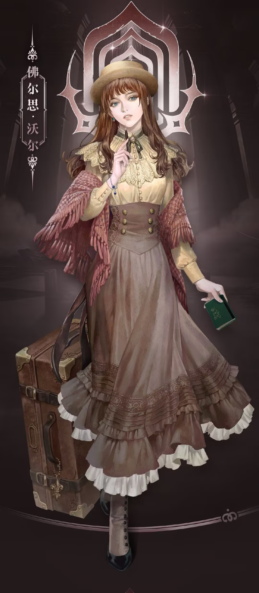 | 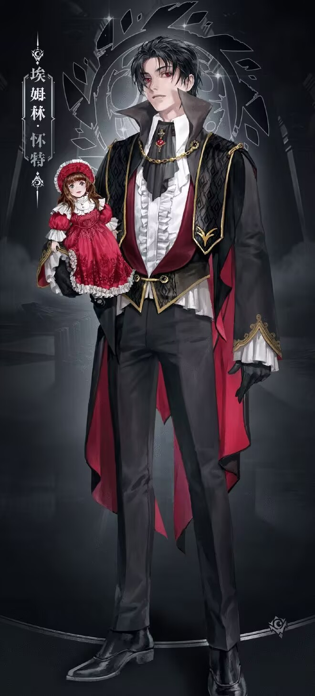 | |||
佛 尔 思 沃 尔 代号 魔术师 |
格 尔 曼 斯 帕 罗 代号 世界 |
埃 姆 林 怀 特 代号 月亮 |
||
| 佛尔思·沃尔是《诡秘之主》塔罗会中极具个性的成员，身高1米65，褐发微卷，淡蓝眼眸带慵懒笑意，手指因抽卷烟薰黄，握笔处有厚茧。她出身普通，医学院毕业后曾行医，后成为作家，母亲早逝、父亲重组家庭，身世略带坎坷。性格慵懒拖延却重情义，关键时格外可靠，因继承病人遗留的非凡特性踏入非凡界，又因使用亚伯拉罕家族手链，满月饱受呓语折磨，绝望中向“愚者”祈祷入会，代号“魔术师”，走“学徒”途径晋升至序列4“秘法师”。她擅长短途传送、灵界穿梭与仪式魔法，在塔罗会中与休是闺蜜，积极分享非凡知识，提供《灵界见闻》等珍贵资料，借助团队资源提升实力、探索解咒之法，还承接“愚者”任务，传播其信仰并撰写“世界”格尔曼的故事，助力“愚者”苏醒。 | 在塔罗会里，“世界”先生看似只是“愚者”的眷者，实则是克莱恩·莫雷蒂精心创造的小号。他有着黑发整齐后梳、饱满额头、戴圆框眼镜的形象 ，对外是闻名五海的疯狂冒险家格尔曼·斯帕罗。在成员们眼中，“世界”实力强大，是塔罗会里的实力担当。他行事风格神秘莫测，交易时冷静理智，总能巧妙周旋，为塔罗会带来关键物资与情报，像从海盗手中获取重要非凡物品。同时，他也常发布委托，推动成员间的合作，如委托“正义”奥黛丽调查贝克兰德的落魄贵族。虽成员们不知“世界”就是“愚者”，但他与“愚者”配合默契，共同引领塔罗会在非凡世界的暗流中前行，是塔罗会发展不可或缺的关键角色，助力组织不断壮大，深度参与诸多历史事件，成为左右局势的强大力量。 | 埃姆林·怀特是极具辨识度的“月亮”，金发蓝眼、面容精致如贵族少年，一身考究服饰透着吸血鬼特有的优雅与疏离。他出身贝克兰德吸血鬼家族，因不满族群保守理念、渴望突破束缚，在探索非凡之路时被“愚者”的召唤吸引而入会。性格初期骄傲叛逆，带着吸血鬼的优越感，却在与成员相处中逐渐变得沉稳负责，尤其珍视塔罗会这个能实现自我价值的“庇护所”。他走“月亮”途径，擅长血液魔法与精神干扰。在塔罗会中，他主动分享吸血鬼族群的隐秘知识与超凡资源，积极参与团队任务，以独特的族群视角为塔罗会的决策提供助力，同时也在这个集体中找到了超越族群偏见的归属感。特别喜欢玩偶。 |
| 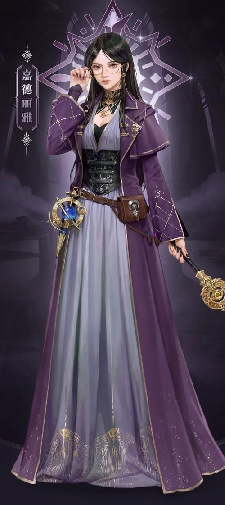 | 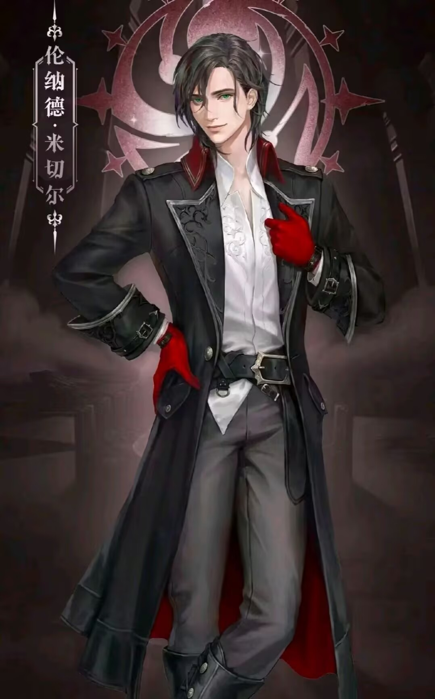 |  |
||
嘉 德 丽 雅 代号 隐者 |
伦 纳 德 米 切 尔 代号 星星 |
休 迪 尔 查 代号 审判 |
||
| 在塔罗会中，嘉德丽雅代号“隐者”，是神秘而强大的存在。她曾是“星之上将”，后成为“星之女王”，统领星星海盗团。她是“神秘女王”贝尔纳黛的养女，因命运预言而独自漂泊，加入摩斯苦修会。作为窥秘人途径序列3“预言大师”，她擅长窥秘之眼、预言占卜等能力，知识渊博，是塔罗会的“智库”。她曾因向贝尔纳黛透露塔罗会信息被“愚者”敲打，此后行事谨慎，积极参与塔罗会事务，为成员提供关键情报与帮助。 | 在塔罗会里，伦纳德·米切尔代号“星星”，是黑夜女神教会高级执事，也是塔罗会中个性鲜明的存在。他身高1米8，一头黑发，绿色眼眸深邃有神，自带诗人般的浪漫气质，尽管行事风格散漫、衣着随性，却难掩骨子里的正义与热忱 。他从小在黑夜女神教会孤儿院长大，后加入廷根市值夜者小队，与克莱恩成为队友，经历一系列非凡事件，却在与梅高欧丝的对战中重伤昏迷，醒来后队长邓恩与克莱恩“被杀”，这让他痛苦懊悔，决心加入红手套向因斯·赞格威尔复仇 。他是“不眠者”途径半神，晋升至序列4“守夜人”，擅长格斗、射击，还能借助能力将人拉入梦境、安抚灵魂、驱使自然灵，在黑夜中实力大增。在调查中他发现克莱恩未死并恢复联络，之后与克莱恩、戴莉联手击杀因斯，战斗中向“愚者”祈求帮助，被拉入灰雾加入塔罗会。在塔罗会里，他积极分享黑夜教会情报，参与诸多任务，像与队友探索格罗塞尔梦境、深入集体潜意识海洋；战争期间，他率领非凡者维持贝克兰德稳定，还将“塔罗会”展现在官方视野中，是连接塔罗会与黑夜女神教会的关键纽带，在组织发展与应对各方局势中发挥重要作用。 | 在塔罗会里，休·迪尔查代号“审判”，是充满使命感的实力成员。她身高一米五出头，青涩面容配毛糙黄发，身着骑士练习服，自带威严气场。出身贵族却因父亲遭王室陷害而家族没落，被迫逃亡后成为赏金猎人，凭借“半个仲裁人”特质成东区地下“仲裁者”，与佛尔思结为挚友。经佛尔思引导诵念“愚者”尊名，又在古堡受污染时求救，正式入会。作为“仲裁人”途径半神，晋升至序列4“律令法师”，擅长制定规则、禁止目标行为，精通武器且近战强劲。在塔罗会中，她参与惩戒隐瞒者、追查父亲死因、狩猎极光会成员等任务，身为军情九处法官，战争期间处理间谍案维护鲁恩稳定，是塔罗会对接官方的关键纽带，“愚者”沉眠后还肩负传播信仰与调查魔女的重任。 |
伙 伴 & 朋 友 & 恩 人 |
| 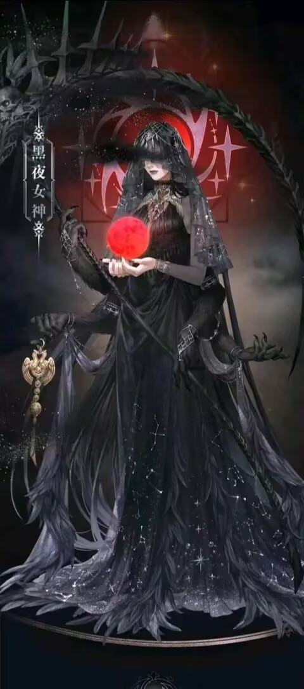 | 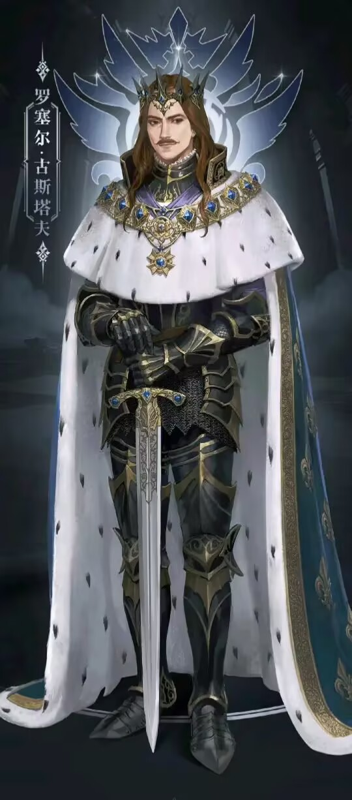 |  |
||
黑 夜 女 神 |
罗 塞 尔 古 斯 塔 夫 |
贝 尔 纳 黛 古 斯 塔 夫 |
||
| 黑夜女神阿曼妮西斯是执掌不眠者途径的序列0真神，也是黑夜女神教会的信仰核心。她是首位从源堡苏醒的穿越者，原身为古神毁灭魔狼弗雷格拉的从属厄运女神，在毁灭魔狼陨落后，获取黑夜途径特性与唯一性后销声匿迹，后在众神之战中晋升为序列0的黑暗。她司掌黑夜、隐秘和厄运，通过掌控人造死神获得死神权柄，又与莉莉丝联手在神战中击败战神，进而掌握战神权柄，具备了成为旧日的资格 ，神国深黯天国位于安曼达山脉。黑夜女神还是“救赎蔷薇”的发起者，她诱惑暗天使背叛，联合众天使之王成功刺杀远古太阳神，在第四纪元尾声获得“死神”唯一性，还与莉莉丝合谋取得“黄昏巨人”唯一性 。她的形象在教会里只宣传尊名、圣徽和教义，官方设定中，她以月为枕，身着黑色古典长裙，身体虚化，面容朦胧却异常秀美；神话生物形态下，身着幽黑长裙，肋间和腰部各伸出两条手臂，分别持黑色巨镰与黄金饰品 。从第二纪元苏醒后的火之初耀年代，到第五纪元的黑铁纪元，她历经诸多神战与权力更迭，参与了无数重大事件，深刻影响着整个世界的格局，在克莱恩成为“愚者”的晋升之路上，也默默给予了诸多帮助与支持。 | 罗塞尔·古斯塔夫原名黄涛，是《诡秘之主》里来自源堡的第二位穿越者，成为因蒂斯王国落魄贵族后代。他加入“工匠之神”教会，成为“通识者”途径非凡者 ，凭借记忆重现大量发明，因蒸汽机被称作“蒸汽之子”。他与玛蒂尔达结婚生下贝尔纳黛、夏尔、博诺瓦，出海时受母神隐秘污染，后任陆军军官培养势力。1173年，他趁索伦家族引发民怨，以平息叛乱之名发动政变，将王国改为共和国并任执政官，后经查拉图引荐加入“黄昏隐士会”晋升半神。执政二十年，他颁布《民法典》，带给人民不可磨灭的影响。在“黄昏隐士会”帮助下，他晋升序列1“知识皇帝”，因晋升无望转窥秘人途径，受“门先生”影响登月，被母神污染而性情大变。1192年年底，他将共和国改为帝国，自称“凯撒大帝”，强行转换“黑皇帝”途径 。1194年，他发现新航道开启殖民时代；1197年，以亵渎石板为基础制作22张亵渎之牌；1198年准备晋升仪式时，故意被多方势力刺杀，想借此清除残余特性与污染并复活，却因新生污染只能中止，靠“黑皇帝”权柄抵抗母神降临。1352年，他与贝尔纳黛重逢，被她和克莱恩联手封印后沉睡。他放荡不羁、有政治头脑，以一己之力推动北大陆工业革命，虽被污染行事疯狂，却也留下诸多非凡知识与线索，深刻影响着故事发展。 | 贝尔纳黛·古斯塔夫身为穿越者罗塞尔·古斯塔夫的长女，自幼备受宠爱，曾被查拉图预言会在神秘世界举足轻重，也会背弃父亲。她身高1米73，栗色长发及腰，身材比例绝佳，蔚蓝双眸深邃如海，衣着风格在因蒂斯传统与地球现代风间变换 。因不满父亲执政后期的疯狂举措，她离开因蒂斯，成为海上四王之一的“神秘女王”，旗舰“黎明号”。她创立要素黎明，对抗摩斯苦修会和隐匿贤者，探寻父亲疯狂与陨落的真相及复活可能。作为窥秘人途径序列2的贤者，她能力强大，从序列9窥秘人对神秘知识的掌握，到序列7巫师施展各种法术，再到高序列时的星象之力运用，都得心应手。她与主角克莱恩有诸多交集，协助他潜入教堂、破坏乔治三世成神仪式 ，在克莱恩引导下找到罗塞尔陵寝，却无奈在“愚者”帮助下封印被污染的父亲，借此完成晋升，此后带着复活父亲的信念，继续在神秘世界前行 。 |
| 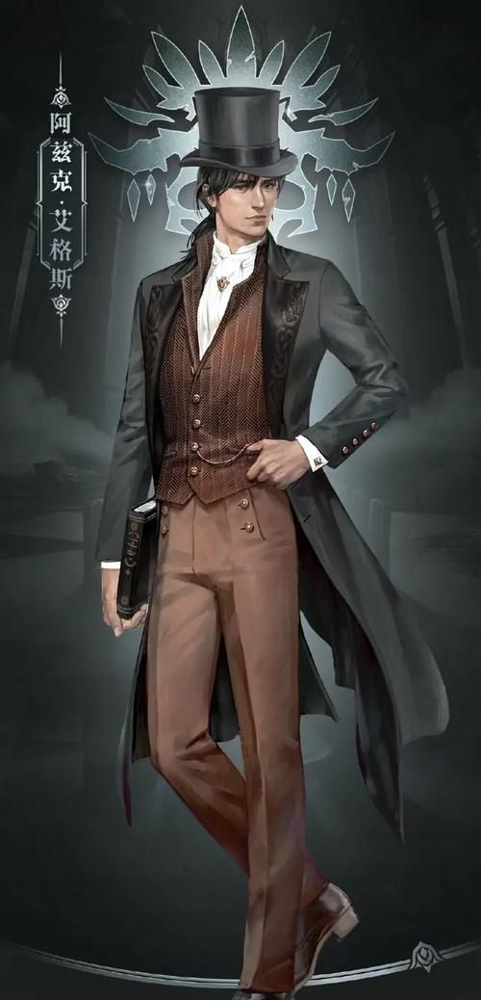 | 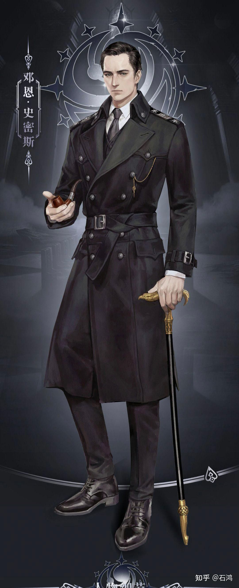 | 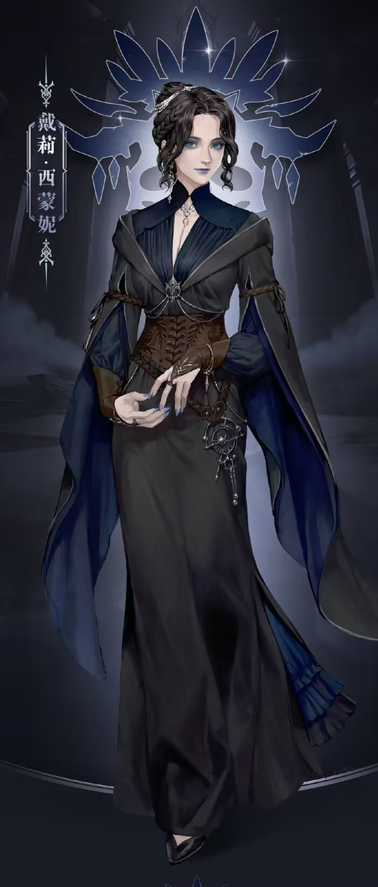 | ||
阿 兹 克 艾 格 斯 |
邓 恩 史 密 斯 |
戴 莉 西 蒙 妮 |
||
| 阿兹克·艾格斯是第四纪拜朗帝国“死亡执政官”、“死神”萨林格尔之子，是收尸人途径序列2的强大天使，掌控着死亡与复苏的非凡力量。因父亲预见拜朗帝国覆灭的结局，为留下复活后手，阿兹克的灵魂被分割成多份，从此陷入每60年便会死亡、重生且失去记忆的循环诅咒，在漫长岁月中不断重复着“苏醒—寻忆—遗忘—陨落”的宿命。他曾以初代拉姆德男爵等身份行走世间，最终在第五纪元的贝克兰德，以霍伊大学历史系教员的身份定居。机缘巧合下，他结识了主角克莱恩，委托对方帮忙寻找散落的记忆碎片与自身过往。在相处中，阿兹克对克莱恩关怀备至，不仅倾囊相授收尸人途径的非凡知识、历史秘闻与格斗技巧，更多次在危急时刻挺身而出：从“秘之圣者”齐林格斯手中救下克莱恩，在贝克兰德大灾变时于陨石坠落中守护对方，还曾协助他对抗极光会等邪恶势力。在人造死神事件中，面对神性复苏与人性坚守的抉择，阿兹克最终选择守护自身的人性与羁绊，陷入沉睡以压制失控风险。小说结尾，他从漫长沉睡中苏醒，通过克莱恩留下的信件知晓了世间变迁与自身宿命的真相，带着完整的记忆与坚定的意志，继续行走在恢复力量、探寻过往的道路上，成为克莱恩成长之路上最温暖可靠的后盾之一。 | 邓恩·史密斯是《诡秘之主》中廷根市值夜者小队队长，35岁时外表仍似三十左右，黑发高鼻，灰色眼眸藏着沉稳沧桑。他是不眠者途径序列7“梦魇”，实力接近序列6，夜越深力量越强，能看穿黑暗、潜入梦境攻击敌人，却因途径副作用记忆力极差。性格温和重义的他，对队员关怀备至，执行寻找奇书、破坏邪恶仪式、抓捕魔女等危险任务时始终冲在前线庇护队友，还会吞噬牺牲队员的非凡特性，在梦境中让他们以特殊方式“留存”。面对心仪的戴莉，他内敛羞涩不敢表白，常被对方调侃得手足无措。1349年9月9日，为阻止真实造物主子嗣降临，邓恩英勇牺牲，用生命诠释了守护者的责任与担当，成为队员心中永恒的精神支柱，也深深激励着克莱恩等人成长。 | 戴莉·西蒙妮是黑夜女神教会值夜者成员，是收尸人途径的非凡者，表面身份是阿霍瓦郡有名的通灵者 。19岁时因一场事故失去家人，误服魔药成为“收尸人”后加入值夜者队伍。她天赋异禀，被称为“天才”，自行摸索出扮演法，成为非凡者短短一年就晋升为序列8“掘墓人”，次年晋升序列7“通灵者”，三年后又升为序列6“死灵导师”，出发前往南大陆调查灵教团前更是晋升到序列5“看门人” 。戴莉常穿带兜帽黑袍，涂蓝色眼影和腮红，手腕处缠绕挂白水晶吊坠的银链，透着妖异冷艳的美感 。她行事大胆开放，爱说荤段子，实则内心因过往经历深感自卑。她与邓恩·史密斯相互爱慕，却都因自卑未曾告白 。邓恩牺牲后，戴莉决心复仇，在与因斯·赞格威尔战斗时，为获取力量强行与强大灵界生物缔结契约，导致自身濒临失控。复仇成功后，她自知必死，请求克莱恩不要让自己变成怪物，最终克莱恩用秘偶化能力抑制住她的失控，戴莉与克莱恩变化成的邓恩跳完最后一支舞后，凄美且满足地离世，结束了短暂却充满传奇色彩的一生。 |
| 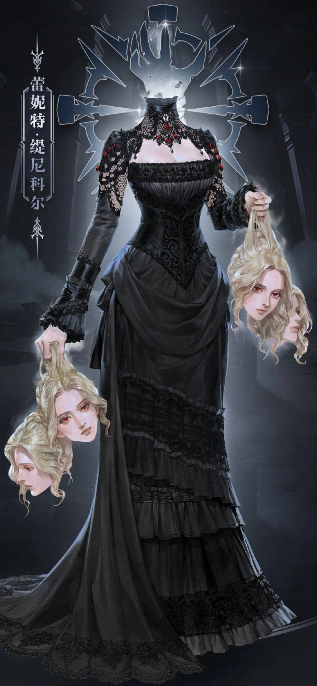 |  |
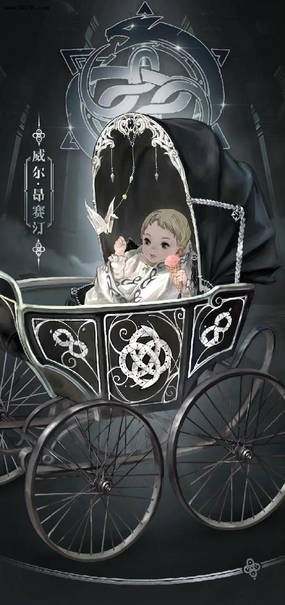 | ||
雷 妮 特 缇 尼 科 尔 |
莎 伦 |
威 尔 昂 塞 汀 |
||
| 蕾妮特·缇尼科尔又称信使小姐。她是“囚犯”途径天使，玫瑰学派节制派前首领，莎伦的老师。她曾是南大陆高地统治者之女，作为“被缚之神”眷者协助父亲建立高地王国。因玫瑰学派内战陨落，后在灵界复活，成为半透明无头女子，常提着四个金发红眼脑袋，身穿华丽黑裙。她与克莱恩签订契约成为其信使，每次送信需一枚金币。性格天真又疯狂，喜欢给人起绰号，行事有原则。后期她经历诸多变故，曾被“真实造物主”污染，后在克莱恩帮助下恢复神智并晋升为天使。 | 莎伦是是玫瑰学派节制派成员，因不认同纵欲派理念，在老师蕾妮特·缇尼科尔庇护下与马里奇叛逃至贝克兰德，成为勇敢者酒吧黑市军火交易背后的支持者。她是“囚犯”途径非凡者，从序列5“怨魂”晋升为序列4“木偶”。莎伦容貌精致，常穿黑色哥特式宫廷长裙，因非凡能力，平时如怨魂般行事神出鬼没，嗓音飘渺虚幻，多在镜子和玻璃中出现。她秉持节制、禁欲理念，性格克制、少言寡语，却十分重感情，一心想为老师复仇，也关心身边同伴。她与克莱恩结识后建立合作关系，还与血族和各大教会联合，共同对抗玫瑰学派纵欲派，致力于宣扬节制理念，渴望世界不再有战争和苦难。 | 威尔·昂赛汀是怪物途径序列1“水银之蛇”。他是生命学派“命运议会”的议长，因命运天使乌洛琉斯的干扰，多次重启人生，初次登场为生病的小男孩，后转世成为艾伦医生的孩子。他拥有命运途径唯一性“概率之骰”，但长期未能找到成神契机容纳它。威尔与克莱恩通过千纸鹤在梦中交流，多次为克莱恩提供帮助，还曾用脐带血换取克莱恩制作符咒。他性格有些天真，非常喜欢吃冰淇淋，常被克莱恩以此诱惑帮忙折千纸鹤。白银城创建愚者教会后，他被视为侍奉愚者的天使。结局时，克莱恩欲助其容纳唯一性，他因体谅克莱恩的疲惫与崩溃而主动放弃，祝愿下次契机会更好。 |
敌 人 |
 |
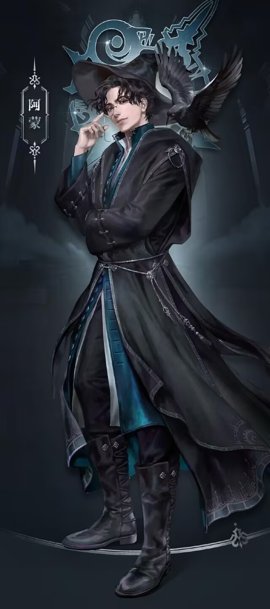 | 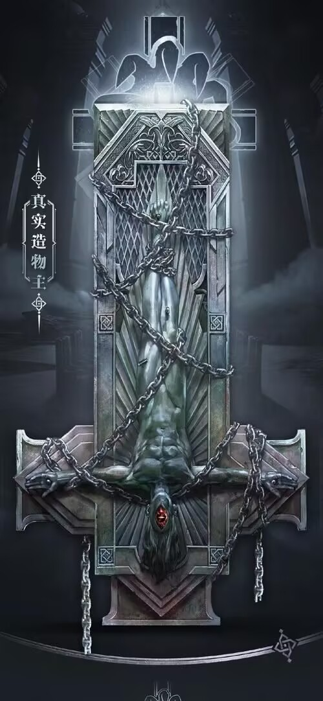 | ||
因 斯 赞 格 威 尔 |
阿 蒙 |
真 实 造 物 主 |
||
| 因斯·赞格威尔是《诡秘之主》中的重要反派角色。他原为黑夜女神教会大主教，是收尸人途径序列5非凡者，因晋升序列4失败且染厄运，盗取0级封印物“008-命运之笔”叛逃。他利用“008”策划廷根市“真实造物主子嗣降临事件”，窃走圣塞琳娜骨灰，致使廷根市值夜者小队覆灭，还间接让克莱恩死亡又重生。之后，他转为不眠者途径，晋升为序列4“守夜人”，却受到封印物副作用影响，被“红天使”恶灵梅迪奇附身。他还参与谋划了贝克兰德大雾霾等灾难，最终在与克莱恩等人的对决中，受“008”反噬与恶灵操控，被联手击杀。 | 阿蒙外号“渎神者”，为远古太阳神次子、亚当弟弟，出生即为错误途径天使之王。他是偷盗者途径唯一性持有者，拥有“时天使”称号，尊名“拨弄时光的指针；遨游命运的影子；欺诈与恶作剧的化身”。阿蒙天性喜欢冒险、寻求刺激，是高智商的偷盗者和诈骗师，将世界视为玩具，以戏弄人类为乐。他能偷走时间、距离、非凡能力等一切位格不高于他的东西，还可寄生他人，被寄生者会成为其分身并戴上单片眼镜，这也让单片眼镜成为其标志性特征。为获取源堡，他多次与主角克莱恩交锋，曾附身戴里克、海柔尔一家及克莱恩的秘偶等。后来，阿蒙借助门先生回归完成成神仪式，成为序列0“错误”，并容纳学徒途径唯一性，成为错误与门双途径真神。神战之后，他为获取源堡与克莱恩决战，本体陨落，只剩一具天使级身体前往星空，实力降为序列2天使。 | 真实造物主是北大陆邪神，为倒吊人途径序列0真神，执掌“堕落”等权柄。祂是远古太阳神死后，其人性回收“暗天使”萨斯利尔，与死前的极端情绪融合所诞生的存在。形象多为被锁链倒吊的独眼巨人或阴影帷幕后的眼睛，尊名为“创造一切的主；阴影帷幕后的主宰；所有生灵的堕落自性”。真实造物主极为疯狂，常发出能使人发疯死亡的呓语，被书友戏称为“真实rap主”。祂的神国在神弃之地，信奉祂的组织有极光会和铁血十字会。众神纪元时，祂支持黑皇帝所罗门，一同统治北大陆。后来被七神联手封印，便试图突破封锁降临现实世界，却多次被克莱恩阻止。最终，祂与亚当初步融合，以亚当 - 真实造物主融合形态出现，其中亚当占主导地位。 |